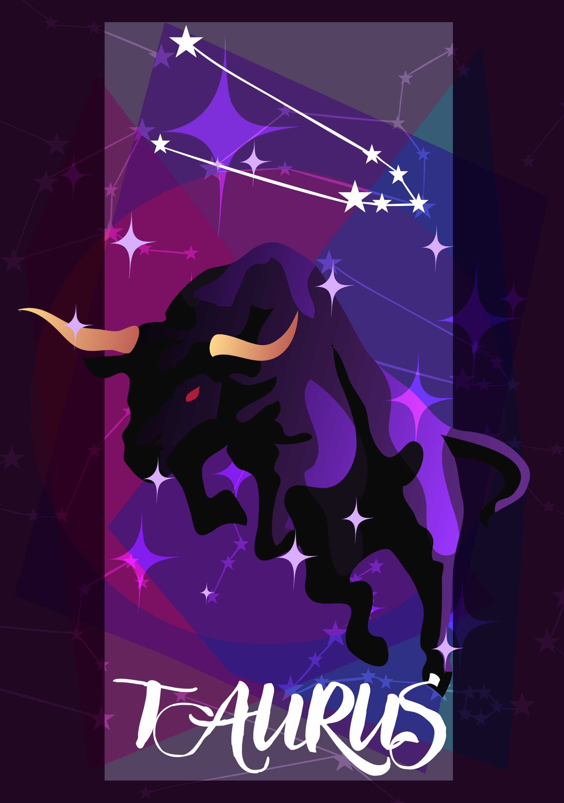

BULL | APR 20 - MAY 20
DEPENDABLE, MUSICAL, PRACTICAL
| Element: Earth | Polarity : Negative |
| Quality : Fixed | Ruling Planet: Venus |
| Spirit Color : Pink | Lucky Gem : Emerald |
| Flower : Rose, Poppy, & Foxglove | Top Love Matches : Cancer&Virgo |
| Ruling House : Second |
Smart, ambitious, and trustworthy, Taurus is the anchor of the Zodiac. Amazing friends, colleagues, and partners, Taureans value honesty above all else and are proud that their personal relationships tend to be drama free. Bulls get the reputation of being stubborn, but they're not always stuck in their ways. This searching sign is willing to see another point of view, but they won't flip-flop on an opinion just to make someone else happy. They will shift their thinking only if they truly have a change of heart.
With a rep as one of the hardest-working signs in the Zodiac, a Bull is never afraid to roll up those sleeves and get to work, and won't blink an eye at pulling an all-nighter to get the job done. But it's not all work for Taurus. Anchored by the earth, this passionate sign is all about sensuality, and is always seeking out pleasure. Whether they're indulging in luxurious massages, spending hours in bed with their lover, or going on a long run, Taureans love feeling present in their body and frequently need to get in touch with their physical self.
When it comes to love, Taureans are all about honesty, which is why a first date with a Bull may resemble a job interview. They're not being rude—they're built for partnerships and are simply trying to see if you're a good fit at the start. And once you begin dating a Taurus, forget about white lies. A Taurus would much rather hear that an outfit is unflattering than endure hollow compliments. Taurus will hold a grudge against someone who lies, even if it's a lie just to make them feel happy. In bed, Taurus is a giving lover—as long as their partner steps it up and makes sure to give as well as receive pleasure! Detail-oriented Taurus may seem nitpicky (even in the bedroom, a mid-romp critique may not be unusual), but that's not because they want to offend. They simply demand the best, and they expect the people in their life to deliver.
"Nothing worth having comes easy."
Persistent and hardworking, once a Taurus sets a goal, it will get done—despite any obstacles that may come up. While becoming friends with a Taurus can be tough since they're so particular about who they want in their social circle, once you're in, you're in for life. Taurus doesn't get pulled down by gossip or petty drama. They'll always see the best in their loved ones and buoy them up when they're feeling down
Yes, they're hardworking, but they're also lazy. How is that even possible? Because Bulls are so driven by their own internal compass, they sometimes have trouble pivoting to fulfill someone else's demands, which can lead to tough times at work or school. Learning to consider others' viewpoints is a lifelong lesson for all Taureans.
Willpower. Think of its symbol, the bull (or even a bulldozer), and you've got an idea of how Taurus gets things done. They push, roll over, and dominate whatever challenges they're facing until those challenges are history. They're also a model for perseverance—when a Bull decides to do something, they get it done.
Adele, Dwayne The Rock Johnson, Audrey Hepburn, Chris Brown, Cam Newton